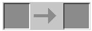
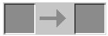

LA WIKI DE MINECRAFT
Obtención de la REDSTONE
 

¿Para qué sirve la redstone en Minecraft?
Origenes de Minecraft
El juego fue desarrollado por Mojang Studios. La creación fue obra del sueco Markus Persson, alias Notch La primera versión fue lanzada en mayo de 2009, aunque la version 1.0 (versión estable) fue lanzada en noviembre de 2011.
¿De que trata el juego?
El juego es del tipo sandbox, un tipo de juego donde el personaje (osea, tú) puede hacer lo que quiera con el mundo, destruirlo a tu antojo, o construir desde una granja, hasta un inmenso castillo. Todo esto, en un mundo abierto casiinfinito